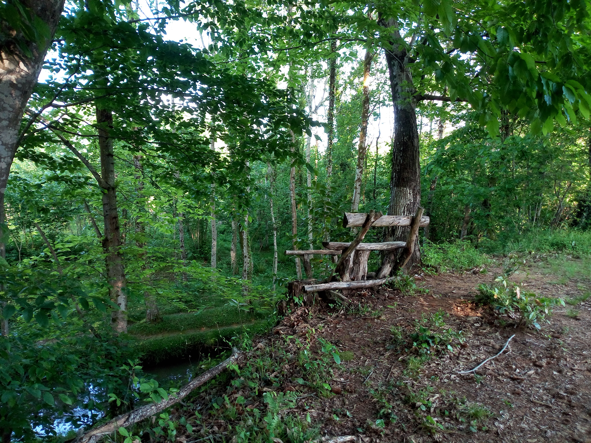

Nestled in the green countryside of Guria, Tsitelmta and Komli Guesthouse offer a glimpse into the peaceful rhythm of rural Georgian life. Surrounded by lush landscapes, traditional village houses, and the natural beauty of western Georgia, this place provides a welcome escape from the busy pace of modern life. The area reflects the charm of Guria, a region known for its distinctive cultural traditions, warm hospitality, and strong connection to nature. Staying in this countryside setting offers an opportunity to experience a more authentic side of Georgia, discover the simplicity of village life, and appreciate the slower rhythm of everyday routines. Away from crowded tourist destinations, Tsitelmta offers a peaceful atmosphere where the surrounding greenery and rural scenery become part of the experience. These photographs capture my personal travel memories of Tsitelmta and Komli Guesthouse, preserving moments from my time in this beautiful corner of Guria.
Explore my personal photographs and memories from Tsitelmta – Komli Guesthouse.
View All Photos ↗